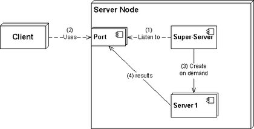

110.2 راه اندازی امنیت میزبان
خلاصه:
وزن: 3
کاندیداها باید بدانند که چگونه یک سطح پایه امنیت میزبان را تنظیم کنند.
حوزه های دانش کلیدی
- آگاهی از رمزهای عبور سایه و نحوه کار آنها.
- خدمات شبکه ای را که استفاده نمی کنید خاموش کنید.
- نقش Wrapper های TCP را درک کنید.
شرایط و امکانات
/etc/nologin/etc/passwd/etc/shadow/etc/xinetd.d//etc/xinetd.confsystemd.socket/etc/inittab/etc/init.d//etc/hosts.allow/etc/hosts.deny
رمزهای عبور سایه
/etc/passwd قبلاً مورد بحث قرار گرفته است. این شامل رمزهای عبور کاربران است اما یک مشکل منطقی وجود دارد: اگر کاربر باید بتواند رمز عبور خود را تغییر دهد، باید به این فایل دسترسی داشته باشد و اگر اینطور است، می تواند رمز عبور دیگران را ببیند. این جالب نیست حتی زمانی که گذرواژهها هش میشوند (به عنوان یک فرم پیچیدهتر با استفاده از یک تابع یک طرفه نشان داده میشوند.
$ ls -ltrh /etc/passwd
-rw-r--r-- 1 root root 2.5K Jun 5 19:14 /etc/passwd
برای جلوگیری از این امر فایل /etc/shadow معرفی شده است. در سیستمهای مدرن، ما فقط یک x را در محل گذرواژه در /etc/passwd نشان میدهیم و رمز عبور واقعی را در /etc/shadow ذخیره میکنیم که دسترسی به فایل بسیار محدودی دارد:
jadi@funlife ~$ grep jadi /etc/passwd
jadi:x:1000:1000:jadi,,,:/home/jadi:/bin/bash
jadi@funlife ~$ grep jadi /etc/shadow
grep: /etc/shadow: Permission denied
jadi@funlife ~$ sudo grep jadi /etc/shadow
[sudo] password for jadi:
jadi:$6$bp01DBX.$I6dt4pz8GeXJl6asgPeKhSdepf40bgepTz8zwB3HFmN56SdcsxjTETdZAmRt17biwMYOI7SoGFOXssHqeNFgw/:16963:0:99999:7:::
jadi@funlife ~$ sudo ls -ltrh /etc/shadow
-rw-r----- 1 root shadow 1.5K Jun 11 17:36 /etc/shadow
/etc/nologin
/etc/nologin فایل جالبی است! اگر چیزی در آن بسازید و بنویسید، محتوا به هر شخصی که بخواهد وارد سیستم شود نشان داده می شود و با آن فایل تلاش برای ورود ناموفق خواهد بود. برای زمان نگهداری مفید است. این فایل را حذف کنید و کاربران می توانند دوباره وارد شوند.
کاربر ریشه حتی در حضور /etc/nologin میتواند وارد سیستم شود
لطفاً همچنین توجه داشته باشید که یک پوسته ساختگی به نام nologin وجود دارد و می توانید آن را به عنوان پوسته برای هر کاربری که می خواهید از ورود به سیستم از طریق پوسته جلوگیری کنید، تنظیم کنید. توجه داشته باشید که چنین کاربری هنوز یک حساب کاربری فعال دارد و میتواند از سرویسهای دیگر (مثلا ایمیل یا ftp) استفاده کند، اما نمیتواند وارد پوسته شود.
sudo usermod -s /sbin/nologin baduser
فوق سرورها
یک ابر سرور یا گاهی اوقات به نام توزیع کننده سرویس، نوعی دیمون است که به دلایل امنیتی و مدیریت منابع، بیشتر بر روی سیستمهای شبه یونیکس اجرا میشود. به درخواست هایی که برای آنها پیکربندی شده است گوش می دهد و در صورت نیاز برای پاسخگویی به درخواست ها، سرویس های هدف را راه اندازی می کند. این یک لایه امنیتی را به ارتباطات شما اضافه می کند و همچنین به برخی از سرویس ها اجازه می دهد تا زمانی که ما به آنها نیاز نداریم غیرفعال شوند. شما میتوانید یک سرور فوقالعاده یا superdaemon را به عنوان یک پوشش TCP (و UDP یا حتی ICMP) در اطراف سایر سرویسها ببینید.

این روزها تعداد کمی از گنو/لینوکس ها از پوشش های TCP مانند xinetd استفاده می کنند، اما ممکن است آن را در برخی از نصب ها یا ردپایی از آن در /etc/xinet.d خود مشاهده کنید. در صورت نیاز، پیکربندی systemd.socket به عنوان یک پوشش TCP برای سایر خدمات نیز امکان پذیر است.
این یک نمونه فایل پیکربندی xinetd است:
service telnet
{
disable = no
flags = REUSE
socket_type = stream
wait = no
user = root
server = /usr/sbin/in.telnetd
log_on_failure += USERID
no_access = 10.0.1.0/24
log_on_success += PID HOST EXIT
access_times = 09:45-16:15
}
اگر disable را به yes تغییر دهیم و xinetd را مجددا راه اندازی کنیم، دیمون telnet شروع به اجرا می کند. چند فایل برای کنترل فایل های مرتبط با xinetd وجود دارد.
همانطور که گفته شد، xinetd با واحدهای systemd.socket جایگزین شده است. برخی از سرویسها مانند ssh و cups ممکن است یک واحد سوکت در کنار واحد خدمات در توزیع شما داشته باشند. در این صورت کافی است ssh.service را متوقف و غیرفعال کنید و به جای آن ssh.socket را راه اندازی کنید. اکنون systemd.socket به عنوان یک بسته بندی در اطراف پورت 22 عمل می کند و اگر شخصی به این سرویس نیاز داشته باشد، سرور ssh را برای پاسخ دادن راه اندازی می کند.
/etc/hosts.allow & /etc/hosts.deny
این دو فایل دسترسی هاست خاصی را مجاز یا رد می کنند. منطق آن مانند cron.deny و cron.allow است. اگر چیزی مجاز باشد، هر چیز دیگری رد می شود، اما اگر چیزی را به /etc/hosts.deny اضافه کنید، فقط آن چیز خاص رد می شود (و هر چیز دیگری مجاز است).
jadi@funlife ~$ cat /etc/hosts.allow
# /etc/hosts.allow: list of hosts that are allowed to access the system.
# See the manual pages hosts_access(5) and hosts_options(5).
#
# Example: ALL: LOCAL @some_netgroup
# ALL: .foobar.edu EXCEPT terminalserver.foobar.edu
#
# If you're going to protect the portmapper use the name "rpcbind" for the
# daemon name. See rpcbind(8) and rpc.mountd(8) for further information.
#
vsftpd: 10.10.100.
vsftpd چگونه از این فایل مطلع است؟ زیرا از کتابخانه libwrap در منبع خود استفاده می کند و libwrap ابزارهای wrapper را درک می کند. میتوانید این ادعا را با جستجوی libwrap در فهرست کتابخانههای vsftpd بررسی کنید:
➜ ~ ldd /usr/sbin/vsftpd | grep libwrap
libwrap.so.0 => /lib/x86_64-linux-gnu/libwrap.so.0 (0x00007fb293921000)
در اینجا سرویس vsftpd فقط از 10.10.100 مجاز است.* . می توان از ALL به عنوان نام سرویس برای مجاز کردن یا رد کردن همه خدمات استفاده کرد.
پس از تغییر این فایل، xinetd باید راه اندازی مجدد شود
همانطور که گفته شد، سرورهای فوق العاده دیگر استفاده نمی شوند و اکثر توزیع ها از خدمات مستقل استفاده می کنند.
حذف سرویس های استفاده نشده
بر اساس توزیع خود، میتوانید سرویسهای در حال اجرا را با استفاده از دستور service یا systemctl بررسی کنید. اگر از سیستم init SysV (عمدتاً توزیعهای قدیمیتر) استفاده میکنید یا ابزارهای سازگاری را نصب کردهاید، به صورت زیر عمل کنید:
~ sudo service --status-all
[ - ] alsa-utils
....
[ + ] ufw
[ + ] unattended-upgrades
[ + ] uuidd
[ + ] vpn-unlimited-daemon
[ + ] vsftpd
[ - ] whoopsie
[ - ] x11-common
در یک دستگاه مبتنی بر RedHat، می توانید یک سرویس را از طریق:
sudo chkconfig vsfptd off
و در ماشین های دبیان:
sudo update-rc.d vsftpd remove
اگر از systemd استفاده می کنید، برای بررسی و توقف/غیرفعال کردن یک سرویس به صورت زیر عمل کنید:
systemctl list-units --state active --type service
systemctl status
systemctl disable vsftpd.service --now
لطفاً به یاد داشته باشید که در سیستمهای قدیمیتر، ما قبلاً همه اسکریپتهای Init را در پوشههای /etc/init.d و /etc/rcX.d داشتیم. همچنین یک فایل /etc/inittab وجود داشت که یک فایل پیکربندی برای مقداردهی اولیه یک سیستم لینوکس با استفاده از SysV بود. این شامل خطوط در این قالب است:
این به سیستم init میگوید که actions را در process در یک runlevel خاص انجام دهد. به عنوان مثال:
id:runlevel:action:process
این دستور به init میگوید که شروع کند (و در صورت کشته شدن دوباره بازتاب کند)، دستور mingetty tty1 در سطوح اجرا 2، 3، 4، و 5.
1:2345:respawn:/sbin/mingetty tty1
به عنوان نکته پایانی، این مهمترین خط در فایل inittab بود زیرا به init میگوید در مرحله اجرا سطح 3 شروع شود.
id:3:initdefault:
برای اطلاعات بیشتر درباره runlevels، لطفاً به [فصل 101.3] (1013-change-runlevels-boot-targets-and-shutdown-or-reboot-the-system.html) مراجعه کنید.